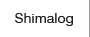
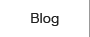
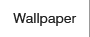
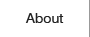

jQuery Rollover Plugin Sample
サンプル1
img要素に.roll付与

※
.rollが付与された要素自身、もしくは子孫要素に対して処理を行うため、a要素にフォーカスしてもロールオーバー処理は行われない（MJL.Rolloverと同一仕様）。
サンプル2
ul要素に.roll付与



サンプル3
最初のメニューのa要素に.unroll（ロールオーバー処理しない）を指定
サンプル4
ロールオーバーの接尾辞を_onに変更
※
.rollが付与された要素自身、もしくは子孫要素に対して処理を行うため、a要素にフォーカスしてもロールオーバー処理は行われない（MJL.Rolloverと同一仕様）。
サンプル5
input要素のロールオーバー